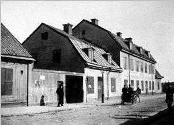
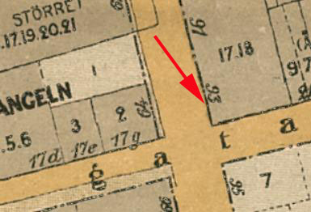
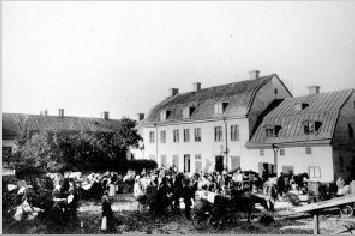

|
 33. Götgatan 93, kv Monumentet. 1902 |
 |
 Götgatan 93. Gårdsinteriör med Stockholms största bondkvarter. 1901 |
|
Några synpunkter i samband med Stadsmuséets hantverksundersökningar 1942
Hans Hansson
Vid Fyllbacken i kvarteret Åsen mindre (nu Monumentet) inte långt från kvarnen Holländskan, som revs på 1890-talet, låg krogen Ekorren. Krogen och dess omgivningar har beskrivits av en av stadsmuseets flitigaste sagesmän, tunnbindaren Richard E Olsson: "Där var alltid hög luft fastän det var lågt i taket På golvet låg ett tjockt lager med sågspån så att det värsta eländet kunde skylas över kvickt. Gästerna utgjordes huvudsakligen av kvarterets hantverksgesäller, en och annan 'kolejdare' samt slaktar- och bryggardrängar som ofta var i luven på varandra. Men Ekorren hade också ett 'skänkrum' som låg inåt den stora Viderkvistska gården. Denna kallades vanligen Bondgården och var det största bondkvarteret på Söder. Hit kom Bönderna med sina foror från Öster- och Västerhaninge, Sorunda, Ösmo och andra socknar för att göra affärer. I synnerhet på fredagar och lördagar var kommersen i Bondgården lika stor som på vilken marknadsplats som helst. Här såldes kött, fläsk, smör och ägg och här drev hästskojare och bondfångare sina ljusskygga affärer som i allmänhet gjordes upp inne i Ekorrens skänkrum. Utåt Götgatan hade gårdsägaren Viderkvist sina bodar. Där fanns järnkramhandel, hökare- och kryddbodar och längst bort i hörnet av Holländarebacken (nuvarande Ölandsgatan) en läderhandel. Viderkvist hade även ett garveri högre upp i backen. På krönet mitt emot kvarnen Holländskan fannsstora åkerier och en smedja. Ekorrens närmaste granne åt Sandbergsgatan (Gotlandsgatan) var knockska bageriet. Längre ner vid samma gata låg en liten handelsträdgård. Här hade även skomakare, skräddare, sadelmakare, snickare och borstbindare sina verkstäder inrymda i låga träkåkar, omgivna av trädgårdstäppor. |
Kvarterets märkligaste byggnad låg vid Tullportsgatan (Östgötagatan). Det var 'Bångens stora stenhus', som ägdes och beboddes av spannmålshandlare Bång. På gården hade Tunnbindar-Olle sin verkstad. Den som någon vinterkväll hade sina vägar neråt den sparsamt upplysta Tullportsgatan kunde tro att elden var lös, när liggarstaven (tunnbrädorna) under ständigt hamrande formades över de stora fyrgrytorna på gården. Tunnbindar-Olle sysselsatte ännu vid slutet av 1890-talet 20-25 gesäller. Han köpte tusentals ekar på rot i Småland och Östergötland och importerade liggarstav från Tyskland och Amerika. Till 1897 års utställning gjorde han en oval punschliggare, som rymde 10 000 liter. Detta mästerverk, som alltigenom var gjort för hand med de vanliga hjälpmedlen yxor, sågar, knivar och hyvlar, inköptes sedan av Cederlundska punschfirman. När Stora bryggeriet vid Hornsberg startade, beställdes härifrån 50 liggare som skulle levereras samtidigt. Transporten skedde en vintermorgon på 50 slädar. Det var det största slädparti som någonsin gått av stapeln på Söder. I kvarteret fanns slutligen även ett par trätoffelmakare, som hade full sysselsättning åt drängarna vid de kringliggande bryggerierna. När arbetsstyrkan vid dessa hade sina måltidsraster kunde man tro, att det var en hel skvadron från Kungliga Hästgardet som kom. Så klapprade de järnbeslagna trätofflorna över kullerstensgatorna under ackompanjemang av sjungande dalmål från Mora, Rättvik och Lerksand. I hela kvarteret fanns inte en enda brunn. Allt dricksvatten fick hämtas och bäras med ok från en gammal hälsobrunn vid Sundsta nere vid Skanstull." |